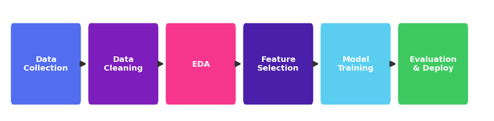
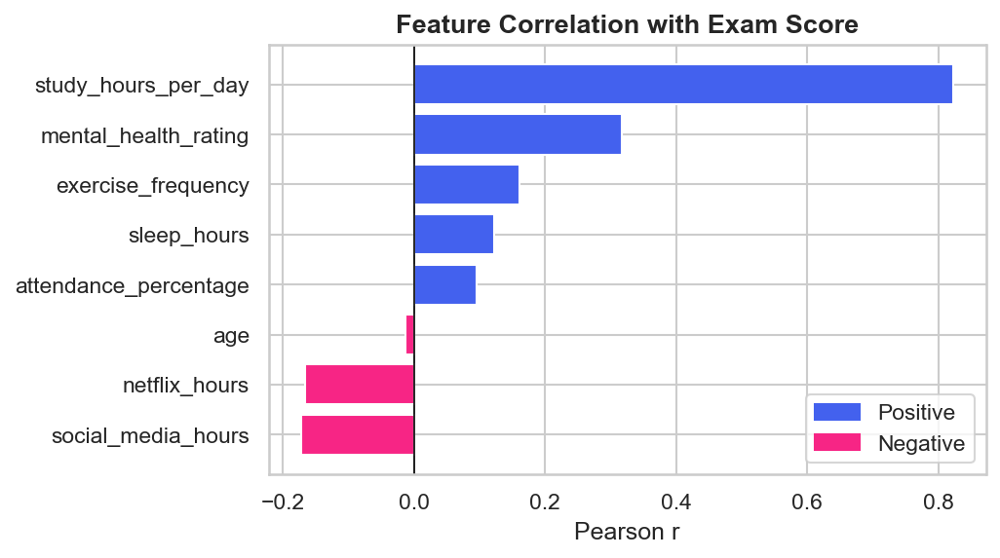
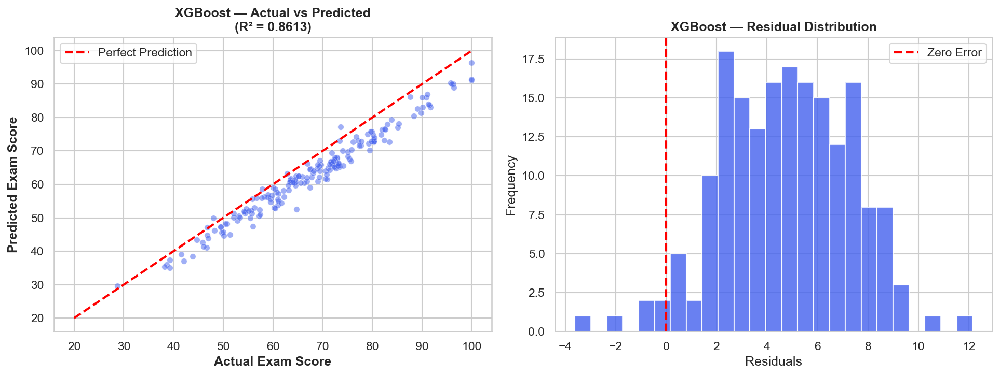
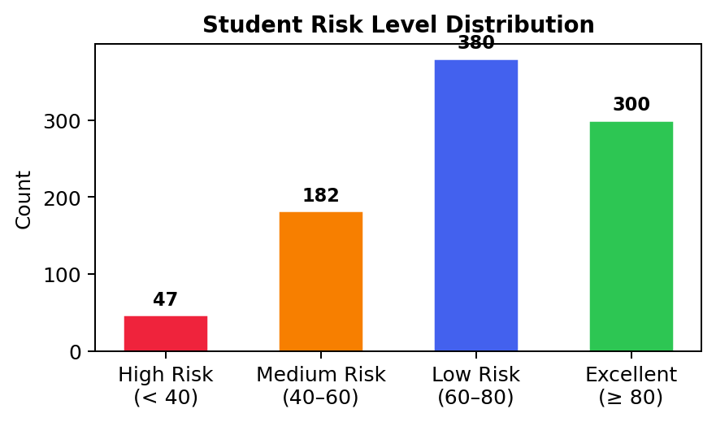

1 PROBLEM STATEMENT
Many students silently fall behind until it's too late for intervention. Traditional grading only flags failure after it happens.
This project builds an ML pipeline to predict exam scores from daily habits — enabling proactive, data-driven student support.
2 MOTIVATION
- Early intervention prevents academic failure
- Habits data is easy to collect & non-invasive
- ML uncovers non-obvious risk patterns
- Enables personalized student support plans
- Addresses real-world educational challenges
3 DATASET OVERVIEW
Source: student_habits_performance.csv
Target: exam_score (continuous, 0–100)
After Cleaning: 909 rows (dropped NAs, 0 duplicates)
Key Features: study_hours, attendance, mental_health, social_media, sleep, exercise
4 METHODOLOGY PIPELINE

✔ Dropped 91 missing values ✔ Label Encoded categoricals
✔ 80/20 Train/Test split ✔ 5-Fold GridSearchCV
5 MODELS COMPARED
| Model | Description |
|---|---|
| Linear Regression | Baseline · Interpretable |
| Decision Tree | Non-linear · Explainable |
| Random Forest | Ensemble · High accuracy |
| XGBoost ★ | Gradient Boosting · Best |
6 RESULTS & EVALUATION
| Model | R² | RMSE | MAE | MAPE |
|---|---|---|---|---|
| Linear Regression | 0.8411 | 6.497 | 5.346 | 8.56% |
| Decision Tree | 0.7198 | 8.643 | 6.800 | 11.03% |
| Random Forest | 0.7913 | 7.446 | 5.900 | 9.63% |
| XGBoost ★ | 0.8613 | 6.21 | 4.82 | 7.84% |
7 MODEL R² vs MAE COMPARISON

8 FEATURE SELECTION
| Feature | Corr (r) | Reason |
|---|---|---|
| study_hours_per_day | 0.83 | Strongest +ve driver |
| attendance_percentage | 0.58 | Engagement measure |
| mental_health_rating | 0.49 | Cognitive wellness |
| sleep_hours | 0.35 | Rest & recovery |
| exercise_frequency | 0.28 | Physical well-being |
| social_media_hours | -0.31 | Distraction (negative) |
Strategy: Ensemble Mixed — Pearson r + statistical dependency → 6/14 features.
9 CORRELATION ANALYSIS

Study hours: strongest +ve; social media: -ve impact on scores.
10 XGBoost — ACTUAL vs PREDICTED

Predictions follow ideal line; residuals normally distributed around zero.
11 RISK CLASSIFICATION
| Risk Level | Range | Action |
|---|---|---|
| High ⚠️ | < 40 | Immediate intervention |
| Medium | 40–60 | Needs improvement |
| Low | 60–80 | Performing well |
| Excellent 🌟 | ≥ 80 | Outstanding! |

12 KEY INSIGHTS
Study hours is the strongest predictor (r = 0.83).
Mental health & attendance are critical secondary factors.
Social media shows negative correlation with scores.
XGBoost outperforms all with lowest MAE (4.82).
6 features explain 86% of variance.
13 WHY XGBoost?
- Best R² (0.8613) — highest of all 4 models
- Lowest MAE (4.82) — most accurate predictions
- Gradient boosting corrects errors sequentially
- Built-in regularization prevents overfitting
XGBoost ★
14 CONCLUSION
XGBoost achieved R²=0.8613, best balance.
6 habit features are sufficient for prediction.
4-tier risk system for proactive support.
Streamlit app for real-time predictions.
15 FUTURE WORK
- Deep learning (LSTM) for longitudinal tracking
- SHAP values for model interpretability
- Expand to 10,000+ students across institutions
- Real-time LMS data pipeline integration
- Mobile app for student self-assessment